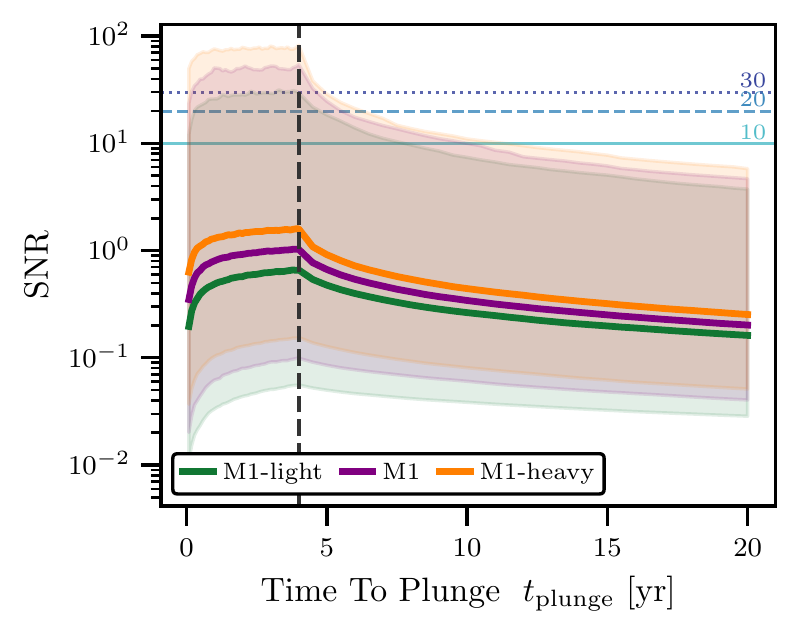
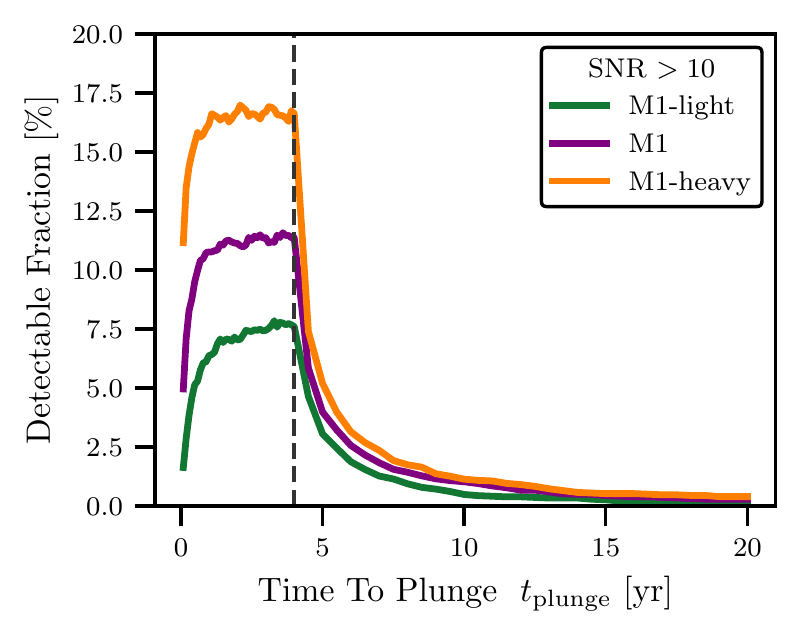
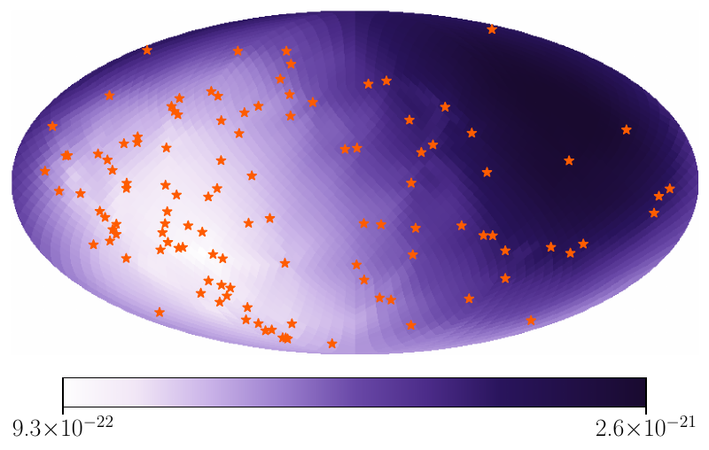
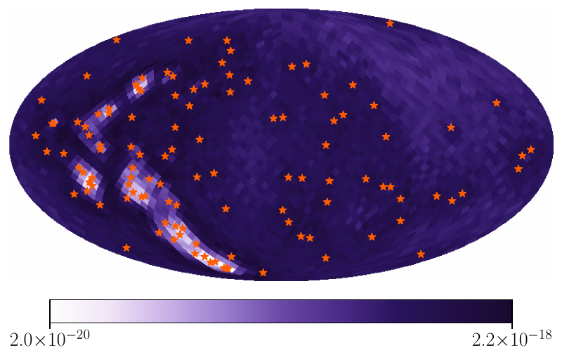
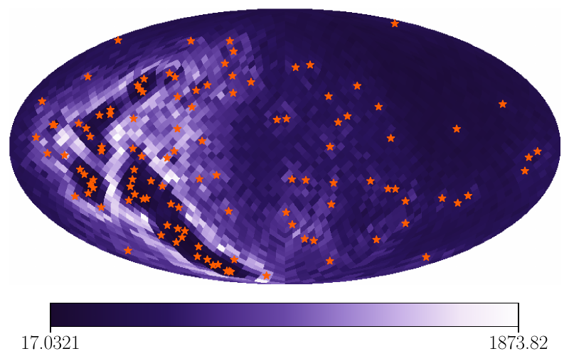
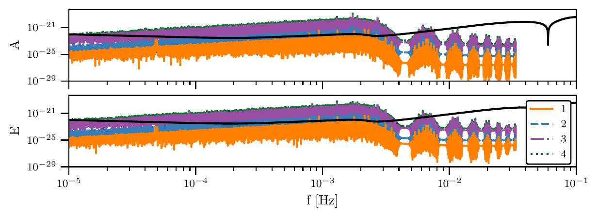
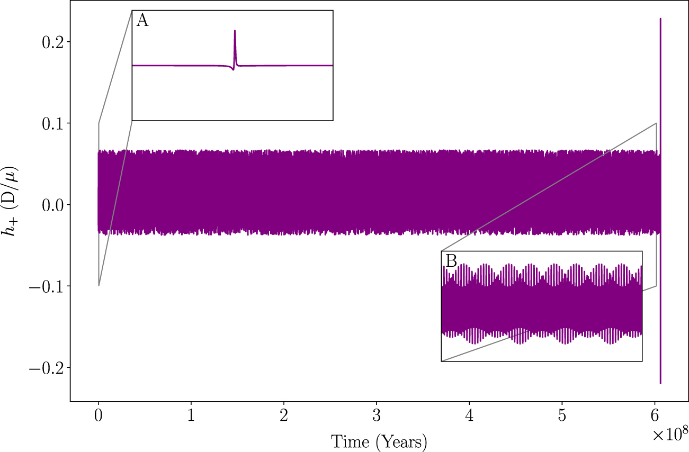

Publications
What Fraction of Extreme Mass Ratio Inspirals That Merge After the LISA Mission Ends Are Detectable?
Citations: loading…


Constraints on Supermassive Black Hole Binaries from the Lack of Resolvable Sources in the NANOGrav 15-yr Dataset
Citations: loading…
Directional Anisotropic Sensitivity Curves for Pulsar Timing Arrays
Citations: loading…



The NANOGrav 15 yr Data Set: Impacts of Customized Chromatic Noise Models on Gravitational Wave Analyses
Citations: loading…
Mitigating the Timing Impact of Anomalous Pulse Profile Shape Variability in PSR J1713+0747 with Gaussian Component Modeling
Citations: loading…
Pulsar Timing Array Sensitivity to Anisotropy: Empirical Sensitivity Curves, Scaling Relations, and the Multi-resolution Pixel Basis
Citations: loading…
The NANOGrav 15 yr and 20 yr Datasets: Timing Events and Pulse Shape Changes
Citations: loading…
The NANOGrav 15 yr Data Set: Customized Chromatic Noise Models
Citations: loading…
The NANOGrav 12.5-year Data Set: Chromatic Noise Characterization & Mitigation with Time-Domain Kernels
Citations: loading…
Gravitational Wave Peep Contributions to Background Signal Confusion Noise for LISA
Citations: loading…

Gravitational wave peeps from EMRIs and their implication for LISA signal confusion noise
Citations: loading…
